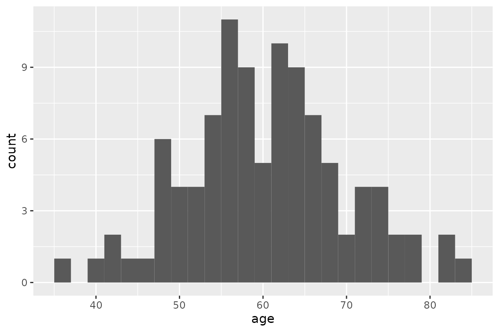

Heterogeneity & Demographic Analysis
2023-02-14
Source:vignettes/g_heterogeneity.Rmd
g_heterogeneity.RmdIntroduction
Heterogeneity analysis is a way to explore how the results of a model can vary depending on the characteristics of individuals in a population, and demographic analysis estimates the average values of a model over an entire population.
In practice these two analyses naturally complement each other: heterogeneity analysis runs the model on multiple sets of parameters (reflecting differents characteristics found in the target population), and demographic analysis combines the results.
For this example we will use the result from the assessment of a new total hip replacement previously described in vignette("d-non-homogeneous", "heemod").
Population characteristics
The characteristics of the population are input from a table, with one column per parameter and one row per individual. Those may be for example the characteristics of the indiviuals included in the original trial data.
For this example we will use the characteristics of 100 individuals, with varying sex and age, specified in the data frame tab_indiv:
tab_indiv## # A tibble: 100 × 2
## age sex
## <dbl> <int>
## 1 77 1
## 2 51 0
## 3 60 0
## 4 63 1
## 5 56 1
## 6 77 1
## 7 52 0
## 8 62 0
## 9 71 0
## 10 86 0
## # … with 90 more rows
library(ggplot2)
ggplot(tab_indiv, aes(x = age)) +
geom_histogram(binwidth = 2)
Running the analysis
res_mod, the result we obtained from run_model() in the Time-varying Markov models vignette, can be passed to update() to update the model with the new data and perform the heterogeneity analysis.
res_h <- update(res_mod, newdata = tab_indiv)## No weights specified in update, using equal weights.## Updating strategy 'standard'...## Updating strategy 'np1'...Interpreting results
The summary() method reports summary statistics for cost, effect and ICER, as well as the result from the combined model.
summary(res_h)## An analysis re-run on 100 parameter sets.
##
## * Unweighted analysis.
##
## * Values distribution:
##
## Min. 1st Qu. Median Mean
## standard - Cost 450.15881156 605.0062810 631.4705169 701.4791743
## standard - Effect 7.47256790 22.7930050 27.3769142 26.0090165
## standard - Cost Diff. - - - -
## standard - Effect Diff. - - - -
## standard - Icer - - - -
## np1 - Cost 593.80297968 635.5509751 643.0316939 663.0656204
## np1 - Effect 7.49009703 23.0848338 27.7656911 26.2802128
## np1 - Cost Diff. -167.83433856 -129.4829089 11.2763887 -38.4135539
## np1 - Effect Diff. 0.01752913 0.1948185 0.2294328 0.2711963
## np1 - Icer -355.65308588 -333.0519971 47.6378220 72.9810754
## 3rd Qu. Max.
## standard - Cost 828.5434528 882.1752204
## standard - Effect 29.0749005 31.5986556
## standard - Cost Diff. - -
## standard - Effect Diff. - -
## standard - Icer - -
## np1 - Cost 699.0605439 714.3408818
## np1 - Effect 29.5008365 31.8353665
## np1 - Cost Diff. 30.5446941 143.6441681
## np1 - Effect Diff. 0.3887769 0.4719046
## np1 - Icer 156.7853582 8194.5991768
##
## * Combined result:
##
## 2 strategies run for 60 cycles.
##
## Initial state counts:
##
## PrimaryTHR = 1000L
## SuccessP = 0L
## RevisionTHR = 0L
## SuccessR = 0L
## Death = 0L
##
## Counting method: 'beginning'.
##
## Values:
##
## utility cost
## standard 26009.02 701479.2
## np1 26280.21 663065.6
##
## Efficiency frontier:
##
## np1
##
## Differences:
##
## Cost Diff. Effect Diff. ICER Ref.
## np1 -38.41355 0.2711963 -141.6448 standardThe variation of cost or effect can then be plotted.
plot(res_h, result = "effect", binwidth = 5)
plot(res_h, result = "cost", binwidth = 50)
plot(res_h, result = "icer", type = "difference",
binwidth = 500)
plot(res_h, result = "effect", type = "difference",
binwidth = .1)
plot(res_h, result = "cost", type = "difference",
binwidth = 30)
The results from the combined model can be plotted similarly to the results from run_model().
plot(res_h, type = "counts")Weighted results
Weights can be used in the analysis by including an optional column .weights in the new data to specify the respective weights of each strata in the target population.
tab_indiv_w## # A tibble: 100 × 3
## age sex .weights
## <dbl> <int> <dbl>
## 1 58 1 0.139
## 2 54 1 0.0697
## 3 75 1 0.907
## 4 65 0 0.0904
## 5 62 1 0.632
## 6 66 1 0.392
## 7 38 1 0.770
## 8 62 0 0.508
## 9 54 0 0.274
## 10 76 0 0.615
## # … with 90 more rows
res_w <- update(res_mod, newdata = tab_indiv_w)## Updating strategy 'standard'...## Updating strategy 'np1'...
res_w## An analysis re-run on 100 parameter sets.
##
## * Weigths distribution:
##
## Min. 1st Qu. Median Mean 3rd Qu. Max.
## 0.002345 0.217701 0.473230 0.471688 0.756621 0.955490
##
## Total weight: 47.16877
##
## * Values distribution:
##
## Min. 1st Qu. Median Mean
## standard - Cost 485.85297365 613.8364635 629.4680260 693.9510896
## standard - Effect 11.78433667 23.8479491 27.3769142 25.9703423
## standard - Cost Diff. - - - -
## standard - Effect Diff. - - - -
## standard - Icer - - - -
## np1 - Cost 603.34263272 637.9508204 642.2020458 660.8900870
## np1 - Effect 11.82839436 25.3875777 27.7656911 26.2325589
## np1 - Cost Diff. -167.83433856 -110.7286273 13.7615031 -33.0610025
## np1 - Effect Diff. 0.04405769 0.1948185 0.2214442 0.2622166
## np1 - Icer -355.65308588 -316.4394659 78.9564344 -5.9784275
## 3rd Qu. Max.
## standard - Cost 802.3426777 882.1752204
## standard - Effect 29.0749005 31.3071020
## standard - Cost Diff. - -
## standard - Effect Diff. - -
## standard - Icer - -
## np1 - Cost 691.6140504 714.3408818
## np1 - Effect 29.5008365 31.6126413
## np1 - Cost Diff. 24.1143568 117.4896591
## np1 - Effect Diff. 0.3499204 0.4719046
## np1 - Icer 115.6325465 2666.7229585
##
## * Combined result:
##
## 2 strategies run for 60 cycles.
##
## Initial state counts:
##
## PrimaryTHR = 1000L
## SuccessP = 0L
## RevisionTHR = 0L
## SuccessR = 0L
## Death = 0L
##
## Counting method: 'beginning'.
##
## Values:
##
## utility cost
## standard 25970.34 693951.1
## np1 26232.56 660890.1
##
## Efficiency frontier:
##
## np1
##
## Differences:
##
## Cost Diff. Effect Diff. ICER Ref.
## np1 -33.061 0.2622166 -126.0828 standardParallel computing
Updating can be significantly sped up by using parallel computing. This can be done in the following way:
- Define a cluster with the
use_cluster()functions (i.e.use_cluster(4)to use 4 cores). - Run the analysis as usual.
- To stop using parallel computing use the
close_cluster()function.
Results may vary depending on the machine, but we found speed gains to be quite limited beyond 4 cores.